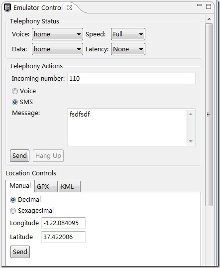

Android DDMS工作原理
Android DDMS将为IDE搭建起与测试终端的链接，它们应用各自独立的端口监听调试器的信息，Android DDMS最大的特性就是可以实时监测到测试终端的连接情况，可以查看新的测试终端连接。
DDMS监听第一个终端App进程的端口为8600，APP进程将分配8601，如果有更多终端或者更多APP进程将按照这个顺序依次类推。DDMS通过8700端口（“base port”）接收所有终端的指令，打开后的窗口为：

在GUI的左上角可以看到标签为”Devices”的面板，这里可以查看到所有与Android DDMS连接的终端的详细信息，以及每个终端正在运行的APP进程。每个进程最右边相对应的是与调试器链接的端口。
因为Android是基于Linux内核开发的操作平台，同时也保留了Linux中特有的进程ID，它介于进程名和端口号之间。Device窗口罗列模拟器中所有的进程，右上角那一排按钮分别为：调试某个进程，更新某个进程，更新进程堆栈信息，停止某个进程，最后一个图片按钮时抓取android目前的屏幕。
当你选中某个进程，并按下调试进程按钮时，如果eclipse中有这个进程的代码，那就可以进行源代码级别的调试。有点像GDB attach。图片抓取按钮可以把当前android的显示桌面抓到你的机器上，也是非常有用。右边那个窗口中有threads，heap，file explorer选项卡。分别显示线程统计信息，栈信息，以及android的文件系统。
file explorer非常有用，他可以把文件上传到android手机，或者从手机下载下来，也可以进行删除操作。选中file explorer选项卡后，按下面三个按钮便可实现对android手机文件系统的上传，下载，删除操作。
eclipse adt目前提供的的ddms功能只是真正ddms的一小部分，你 可以直接使用tools下面的Android DDMS来使用所有功能。其中有一个查看进程内存分配的功能比较有用。另个要注意的是，在DDMS中模拟发送短信时，中文显示为乱码，在未来的开发中，我们必须要注意中文字符的问题。